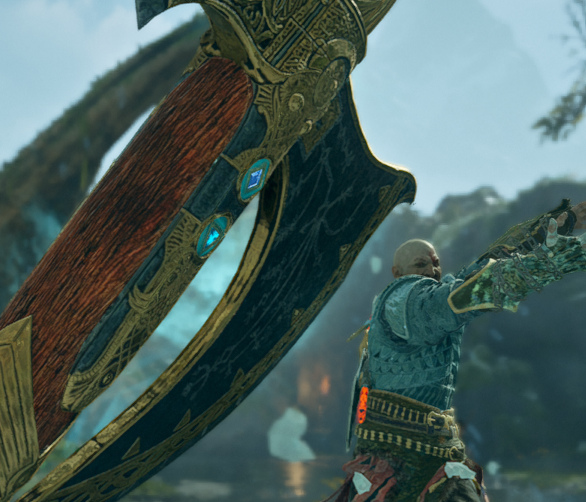

Juan Mota

Summary
I'm a person who loves web development and wants to collaborate with
people in creating awesome websites.
Education
-
CBTis 236 ♦ 2014-2017
-
Universidad Politécnica de Victoria ♦ 2017-2021
- Licenciatura en Ingeniería en Tecnologías de la Información.
Work Experience
-
Especialista en soporte aplicativo ♦ Honne Services ♦ 2022-Present
- Management of several databases' contents.
-
Troubleshooting and implementation of solutions when a database is
relevant.
-
Management of a delivery app's contents, such as banners, coupons,
cost of delivery, etc.
-
Query development to obtain databases' information for reports.
Skills
- English: ☻☻☻☻☺
- Problem solving
- Teamwork
- Attention to detail